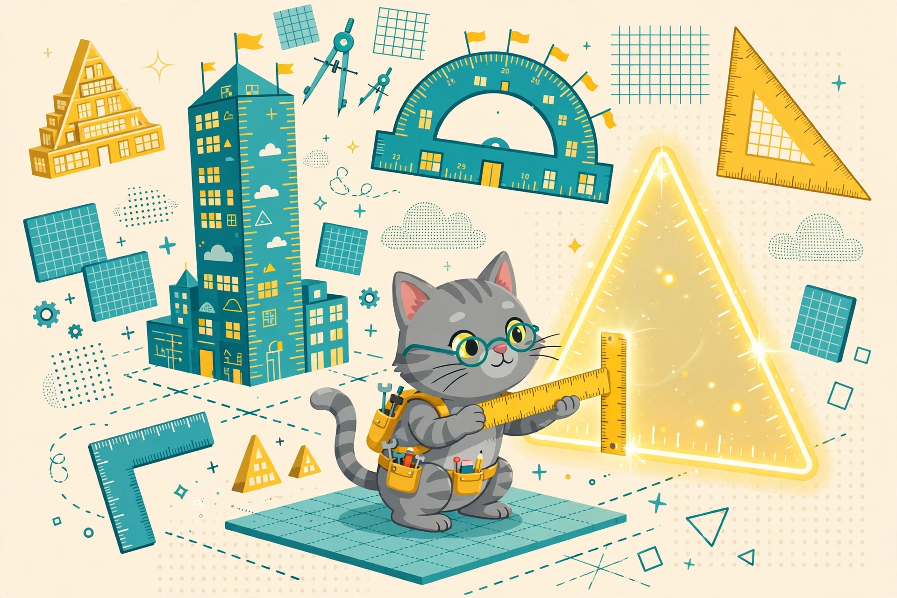

A workshop world where rulers, grids and triangles are the buildings. Mascot: Gridley the Measuring Cat, pictured below.
Buildings shaped like rulers and protractors rise over the workshop, each one exactly as tall as its number says.
A wide field of glowing grids where Gridley the Measuring Cat measures triangles with a yellow ruler.
Rectangles, circles and polygons grow in neat rows, each labeled with its area and perimeter.
A measure calculator (rectangle, circle and triangle, from real numbers) and a length converter (centimetres and inches, both ways). The tools run on this page. They do not reach the web, ask for a key, or change any system.
Work out area and perimeter from real numbers.
Centimetres and inches, both ways.
Designs, printables and demos only. Free, downloadable, usable on this page. Each item is labeled Signature or Fun. Nothing here is for sale.
A printable ruler, marked in centimetres, drawn from the workshop's own rulers.
Making: Print at full size on card and cut along the edge. Check it against a known ruler first.
A poster of a glowing triangle with its sides, angles, area and perimeter labeled.
Making: Print on card and hang it in the workshop.
A notebook of blank grids for sketching shapes and measures.
Making: Print the grid sheets and bind them with a staple or a ring.
A paper protractor for measuring angles on the page.
Making: Print on card, cut out the half-circle, and use it against any angle.
Fun and entertainment only — never fact.
Fun — invented for fun, not a record. Gridley once measured a triangle with four sides and gave up, politely. Fun only — triangles have three sides.
Fun — invented for fun, not a record. A ruler in the workshop is said to have measured its own length and found itself exactly right. Fun only.
Fun — invented for fun, not a record. A circle once tried to become a square and settled for being round. Fun only.